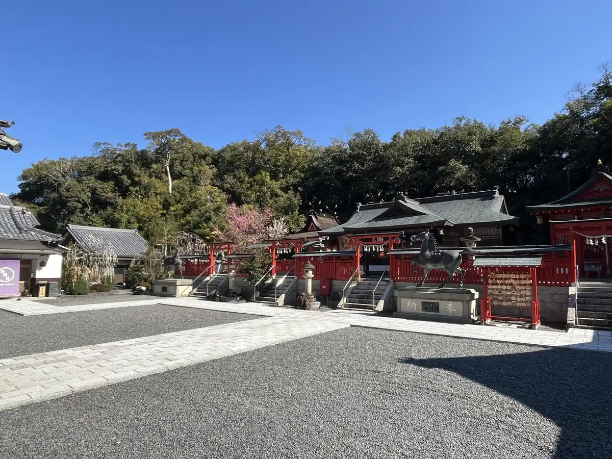
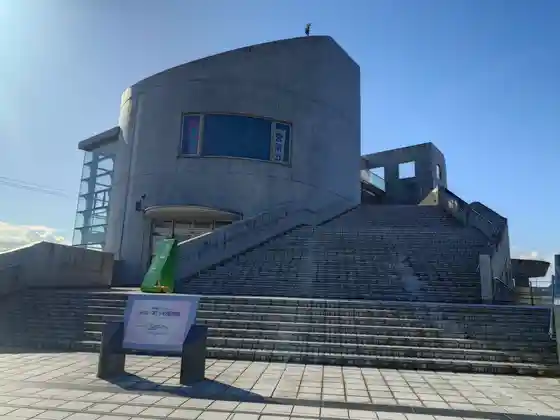
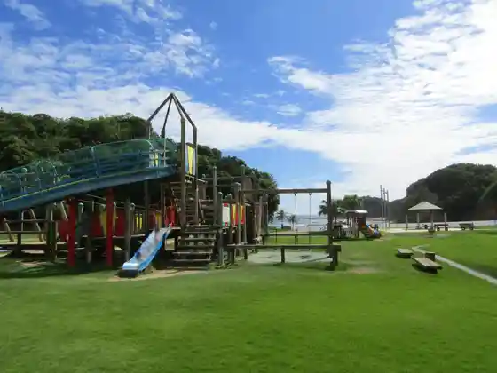

Japan / Wakayama / Minabe
Minabe · Wakayama
Minabe
Highlighted on the Wakayama map.

Minabe Town Hall


Sights · Things to do · Places to eat · Places to stay · Day-to-day services
Nearby in Wakayama: ← Mihama · Nachikatsuura →
Other towns: Arida · Aridagawa · Gobo · Hashimoto · Hidakacho · Hidakagawa · Hirogawa · Inamicho · Iwade · Kainan · Kamitonda · Katsuragi · Kimino · Kinokawa · Kitayama · Koya · Kozagawa · Kudoyama · Kushimoto · Mihama · Nachikatsuura · Shingu · Shirahama · Susami · Taiji · Tanabe · Wakayama · Yuasa · Yura
All towns in Wakayama · Back to all prefectures